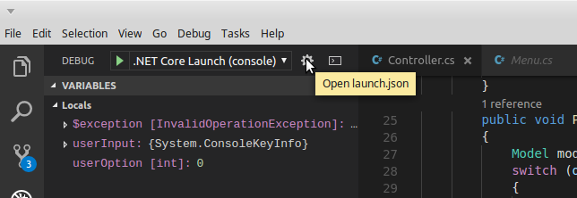
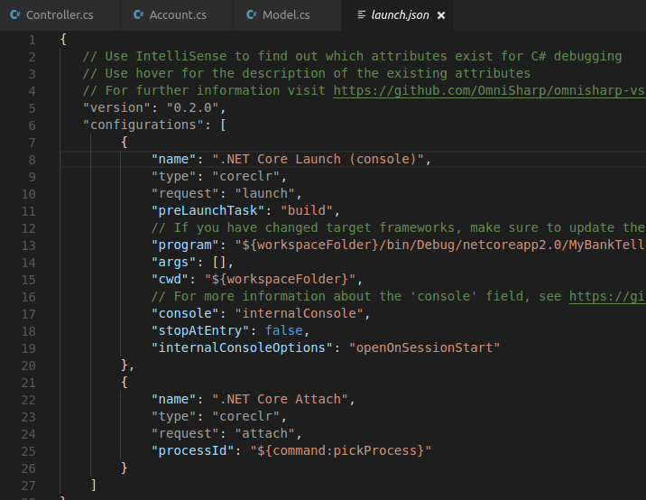
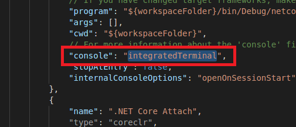

I’ve been developing a few little console apps in C# using Visual Studio Code. The latest one I’ve been working on requires some input from the user. In particular, System. Console.ReadKey() and System.Console.ReadLine().
With this latest project, on launching the debugger I ran into an unhandled exception of type System.InvalidOperationException. The description read, “Cannot read keys when either application does not have a console or when console input has been redirected.”
To get around this exception you have to make a change to a configuration file called, launch.json.
You’ll want to click on the little gear at the top in the Debug Sidebar.

That will open the launch.json file.

In the launch.json file change the value of the console property from internalConsole to integratedTerminal.

This will direct all output from the debugger to Visual Studio Code’s integrated terminal.
Note: On launching the debugger you may have to manually open the terminal to see the output.
If you ever want to change it back, just reverse the changes made to the launch.json file.
That's it!
Comments !